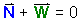
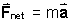
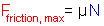
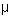
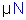

Normal Force & Frictional Force
Introduction | Page 1 | Page 2 | Page 3 | Page 4 | Page 5 | Page 6 | Summary
This sequence of animations examines normal and friction forces. Throughout, only forces acting on the brown block to the right of the table will be displayed. The reaction forces to these forces, which must exist according to Newton's Third Law, are exerted on objects other than the block and will not be shown.
The Page Selector allows you to go to navigate to another page.
The Step Selector allows you to navigate the animation steps within a given page and to toggle on or off this text display.
Page 1
Step 1
The green vector represents the gravitational force exerted on the block by the
earth. The magnitude of this force is the block's "weight"
(W).
Step 3
When the block rests on the table, the table exerts an upward force on the
block. This force acts on the bottom of the block. It is a contact force because
it is non-zero only when the block is in contact with the table. The force
is called "normal force" (N)
because it is perpendicular to the surface of contact between the table and the
block and "normal" means "perpendicular".
The two forces acting on the block are opposite in direction, but equal in
magnitude. Therefore N =
W.
Step 5
The free-body diagram on the right shows all forces acting on the block. The
normal force is opposite to the gravitational force and the two forces are equal
in magnitude. Therefore, the vector sum (the net force) of the two forces is
equal to zero, i.e.,
.
Question: Why is the vector sum (the net force) equal to zero?
Answer: The block is at rest, and therefore its acceleration is
zero. By Newton's Second Law, the net force acting on the block is equal to the
block's mass times its acceleration ().
If the block's acceleration is zero, the net force acting on the block must also
be zero. This is only possible if the normal and gravitational forces acting on
the block are opposite in direction and equal in magnitude, i.e.,
N = W.
Page 2
Step 1
What is the physical nature of the normal force? Is it a single force, acting at
the midpoint on the bottom of the block, as suggested by the single blue vector?
Zoom in and have a closer look.
Step 2
In reality, there are many smaller normal force vectors distributed uniformly
over the bottom surface of the block. Because of this distribution of the normal
force over a surface, the normal force is called a "surface force". In
contrast, the gravitational force is distributed throughout the volume of the
block and is therefore called a "volume force". This is indicated by numerous
small green force vectors acting on different parts of the block.
Step 3
The sum of the smaller normal force vectors is equal to the total normal force
of magnitude (N).
Step 4
Similarly, the sum of the smaller gravitational forces is equal to the total
gravitational force of magnitude (W).
Question: Is (N) equal in magnitude to
(W), for all situations?
Answer: No! On the next page you will see why.
Page 3
Step 1
Apply an additional downward contact force of magnitude (F) on the block,
by placing a weight on the block.
Question: What happens to the size of the normal force acting on the
bottom surface of the block?
Step 3
Answer: When the weight is placed on the
block, the normal force increases in size. Why? And by how much does the size of
the normal force increase?
Step 6
Explanation: The block is at rest, and its acceleration is therefore
zero. Newton's Second Law ()
implies that the vector sum of the three forces acting on the block must also be
zero.
Given the directions of the three forces,
N = W + F.
Thus, the normal force acting on the block is larger than the weight of just the
block alone, i.e., N > W.
Moral: The magnitude of the normal force (N)
is not given by a single expression that applies in all situations, but must be
determined in every case by an application of Newton's Second Law.
Page 4
Step 1
Question: What is the physical origin of the normal force? What enables
the table to push upward on the block?
Zoom in to the molecular level.
Step 2
The round balls represent molecules in the block and the table at the surfaces
facing each other. At the instant shown in Step 2, the block is not quite in
contact with the table yet. Watch what happens when the block makes contact with
the table surface.
Step 3
Notice the compression in the top layers of the table molecules as the block
makes total contact with the table. The upper layers of the table are compressed
like a spring (or like a mattress). This compression is not visible to the naked
eye.
As a result of the compression, the table molecules exert upward forces on the
molecules in the bottom layer of the block. These are the normal forces exerted
by the table on the block. They are indicated by the small blue arrows. Like all
intermolecular forces, these normal forces are electromagnetic in nature.
There are also downward forces acting on the table, but these are not shown.
The wavy lines separating the block and table molecules symbolize the
electromagnetic fields in this area. There are also fields internally within the
block and within the table, but these are not illustrated here.
Step 4
Question: What will happen when you place an extra weight on the block?
Step 5
Answer: When an extra weight is placed on the block, the upper layers of
the table molecules are compressed even further. As a result, the normal forces
exerted by the table on the block increase. The size of the normal forces are
determined by the amount of compression in the table surface. The
compression shown represents the equilibrium that is established after the
weight has been placed on the block and the initial damped oscillations have
died out.
Vary the weight with the slider.
Observe how the normal forces change as the compression of the table changes. Newton's Second Law (), applied to the block, implies that when the block is resting on the table in equilibrium, the magnitude of the total normal force N is given by the equation N = W + F, where F is the magnitude of the force applied by the extra weight to the block.
Page 5
Step 1
The block is now in contact with the table so that the table can exert a contact
force on the block. This force has in general two components: one is the normal
force (N) which is perpendicular to the contact
surface and the second is the friction force (Ffriction)
which is parallel to the surface.
To view the friction force drag the hand to the side of the block.
Step 2
Adjust the pushing force (Fapplied) using the slider.
As long as the block stays at rest, the friction force (Ffriction)
is opposite to the applied force (Fapplied) and its magnitude
varies in order to be equal to that of the applied force. Since the block
is at rest, the friction force is called static friction.
Again, Newton's Second Law ()
demands that when the block is at rest, the acceleration and net force are both
zero. This is only possible if the horizontal applied force is balanced by a
horizontal friction force opposite in direction and equal in magnitude.
Note that the static friction force will not grow indefinitely with the applied force. There is a point beyond which the friction force will not grow. If the applied force increases further, the block will begin to accelerate.
The maximum value to which the magnitude of the static friction force can grow is proportional to the magnitude (N) of the normal force. Expressed in symbols: , where the constant coefficient  is called the static coefficient of friction. Thus the static friction force adjusts itself to a magnitude anywhere between 0 and , depending on the other force or forces that are acting.
Step 1
The static friction force grows as the applied force grows, staying equal in magnitude to the applied force so that the net force is zero and the block remains at rest.
Question: What happens at the surface between the table and block as the applied force approaches the maximum static friction force?
Zoom in to the molecular level and adjust the pushing force slider to "harder".
Step 2
Answer: As the applied force increases there is a sideways displacement of the table and block molecules, which is like the bending of an elastic blade. If the applied force continues to increase in magnitude, the sideways displacement of the molecules will reach a limit and the block will begin to move.
Summary
There is a gravitational force exerted on an object by the earth and it is equal
in magnitude to its weight (W). When an object
rests on a horizontal surface, the surface exerts an upward force on the object.
This force acts on the bottom surface of the object, perpendicular to the
contact surface and is referred to as the normal force (N).
According to Newton's Second Law () , if the object does not accelerate then the
vector sum of the weight and normal force is zero. Therefore, the normal force
and weight are equal in magnitude but opposite in direction.
The normal force is a contact force, distributed uniformly across the bottom
surface of an object. The gravitational force (weight),
on the other hand, is a volume force distributed uniformly throughout the
object.
The magnitude of the normal force (N) is not given
by a single expression that applies in all situations, but must be determined in
every case by an application of Newton's Second Law.
The normal force is related to the amount of compression in the supporting
surface molecules.
The friction force (Ffriction) is also a
contact force, but one which acts parallel to the contact surfaces. Furthermore,
if a horizontal applied force (Fapplied) acts on an object that does
not accelerate then the friction force must be acting in the opposite direction
with equal magnitude. Varying the magnitude of the applied force results in a
matching variation in the friction force. However, the friction force cannot
grow indefinitely if the magnitude of the applied force continues to increase.
If the magnitude of the applied force exceeds the maximum friction force the
object will begin to accelerate.